Structural cosmological model
Gabriel Cantin · Phase 1 · May 2026
The universe as the addressing of a single e
The model proposes an alternative structural reading of the universe — not a correction of the Standard Model, but a reading that stands on its own, built from a few fundamental pieces: a single e at t=0, a circular and constant axis T, a generative function 4df(x), and the outbound–return duality of energy-links.
Author: Gabriel CantinLanoraie, QuebecPhase 1 complete — Mathematical Phase 2 to be undertakenCC BY-NC-ND 4.0
Section 1 — Foundation
Founding overview
The model in one sentence: the entire universe is the addressing of a single e (at t=0) within an observation membrane t=x via a generative function 4df(x), inscribed on a circular and constant axis T. Everything we observe — particles, forces, masses, charges, dark energy, expansion — is a structural manifestation of this single mechanism.
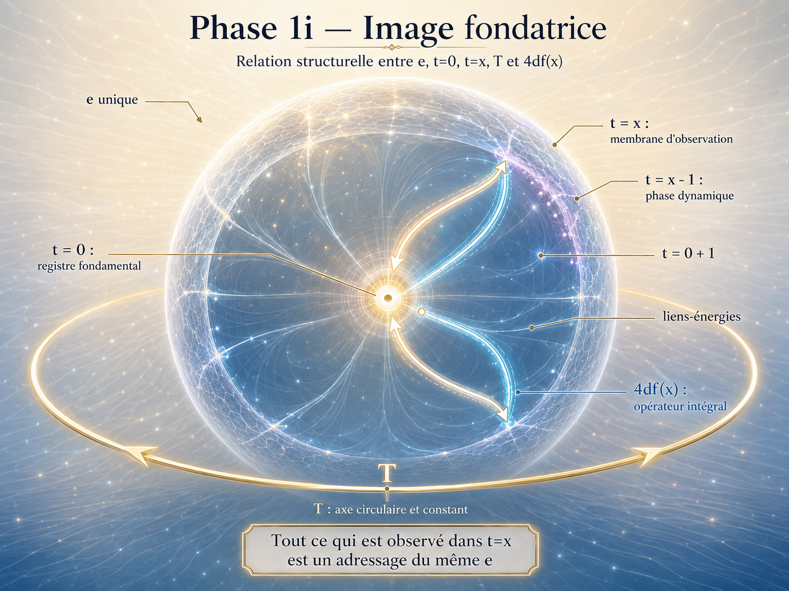
Fig. 0Founding image — structural relation between e, t=0, t=x, T and 4df(x)
The single e at t=0 (fundamental register, outside sequence). T is circular and constant. 4df(x) is the integral operator that addresses e within the observation membrane t=x. Everything we observe in t=x is an addressing of the same e.
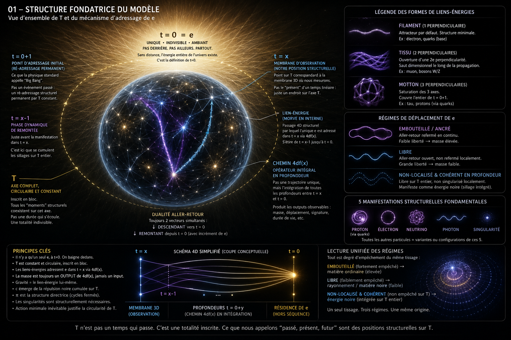
Fig. 1Founding structure of the model — overview of T and the addressing mechanism of e
Three forms of energy-links (filament 1D, fabric 2D, lump 3D), three displacement regimes (bottled, free, non-localized), five fundamental structural manifestations (proton, electron, neutrino, photon, singularity). Everything is a variation of a single mechanism.
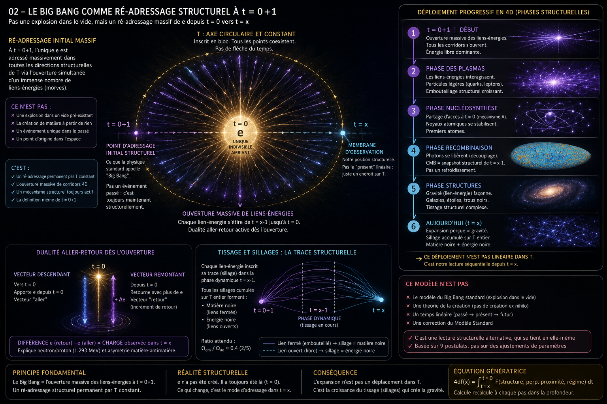
Fig. 2The Big Bang as structural re-addressing at t=0+1
Not an explosion in the void. A massive structural re-addressing of e from t=0 toward t=0+1. Progressive deployment in four dimensions: beginning, plasmas, nucleosynthesis, recombination. The deployment is not linear in T.
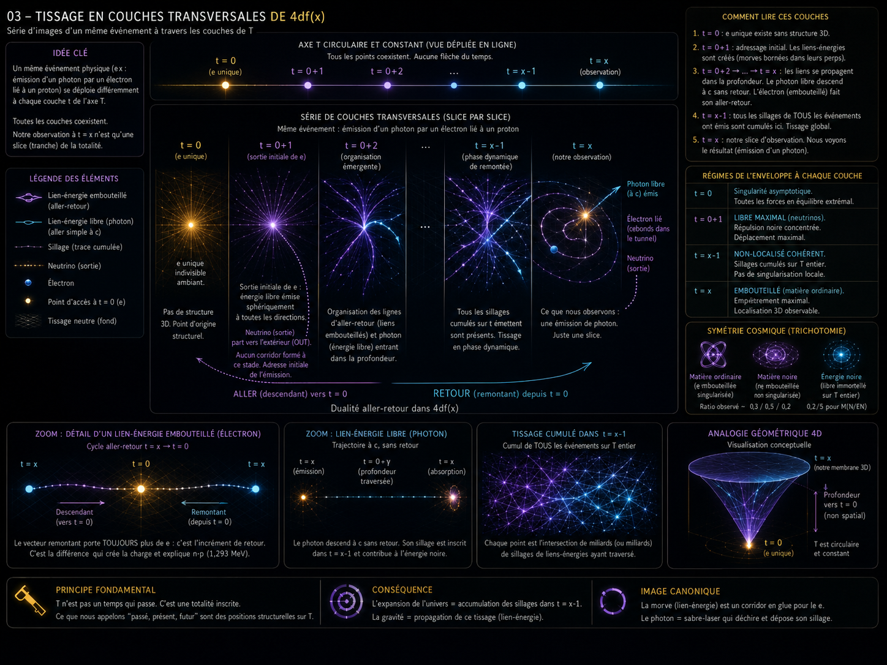
Fig. 3Weaving in transverse layers of 4df(x)
Unfolded view of T: all points coexist. The transverse layers show the outbound–return of every energy-link across depth. The 3D we perceive at t=x is a local reading of a weaving cumulated over the entirety of T.
Section 2 — Reading
Central structural warnings
These four warnings must be read before the genesis images. They correct the natural slippage toward a sequential, linear reading of the model.
1 · T is not a sequence — total duration determines the beginning
T is a constant structural totality, not a flow. The first instants of the universe are not only "before": they are determined by the whole of T. The last hundreds of billions of years play a decisive role for e, because they correspond to an inverted duration of return, resolution, singularization, and re-addressing.
2 · Observation at t=x — reading at c — structural proximity to t=0
When we observe space, we don't directly see t=0+1. We observe proportions of t=x made visible by distance and information transported at c. A vector spanning ten billion years at t=x can remain relatively close to t=0 at the structural scale of T.
3 · No photons at the beginning — the universe at t=0+1 has no complete photons
A photon is an open structure defined by its full existence over c. Three conditions for manifestation: (1) extension over c, (2) information transport at c, (3) reception possible at t=x. At t=0+1: none of the three is met. This is what makes e observable in t=x.
4 · At t=0+1: a single OUT — quarks are what is at play
The photon's weaving is inscribed in whole T and arrives at t=x-1 ahead of t — but we never see it directly. At t=0+1, e is addressed in the quark mode (strong dimension, maximum proximity) and the neutrino mode (assembly in progress, observable at t=0+2). Not in the photon mode.
Section 3 — Structural genesis
From t=0 to t=x (A1 — A7)
The following images show the structural deployment from t=0 to the observation membrane t=x. Reading caution: these are not successive moments after the big bang. They are structural positions in whole T. Structural progression stops at t=0+3; beyond that, we are inside the membrane t=x where we read cumulative manifestations.
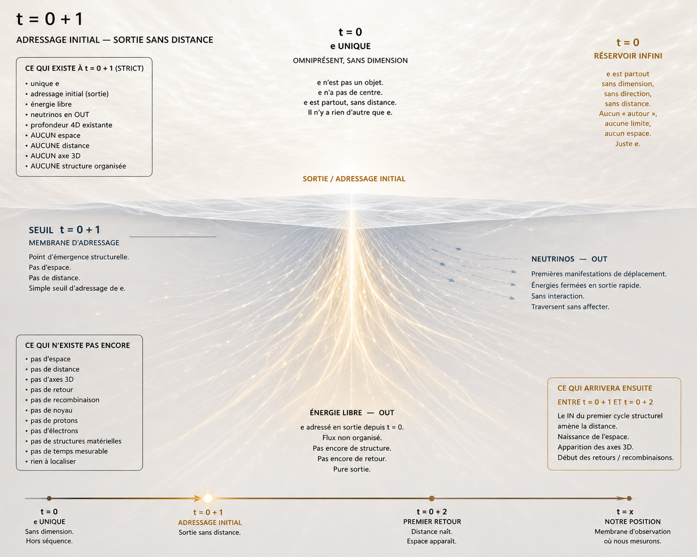
A1 · t=0+1Initial addressing — output without distance
Free energy OUT, neutrinos OUT. No space, no distance, no 3D axes, no organized structure. Only the initial addressing of e at t=0+1. Addressing membrane: emergence threshold.
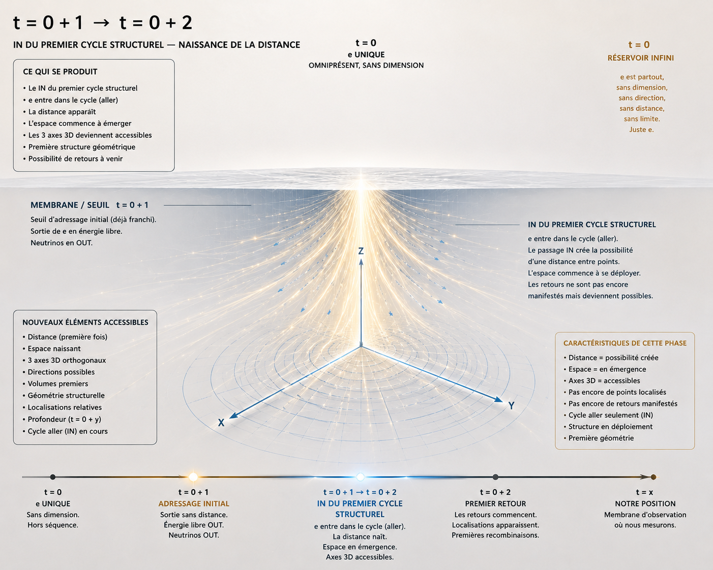
A2 · t=0+1 → t=0+2IN of the first structural cycle — birth of distance (immersive view)
Distance appears, space begins to emerge, the three 3D axes become accessible. First geometric structure. Atmospheric view of the structural shift.
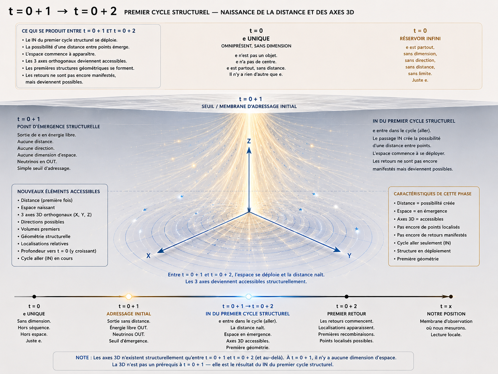
A3 · t=0+1 → t=0+2First structural cycle — birth of distance and 3D axes (didactic view)
Same events as A2 but with global timeline, explanatory boxes, and legends. Complete pedagogical angle on the shift.
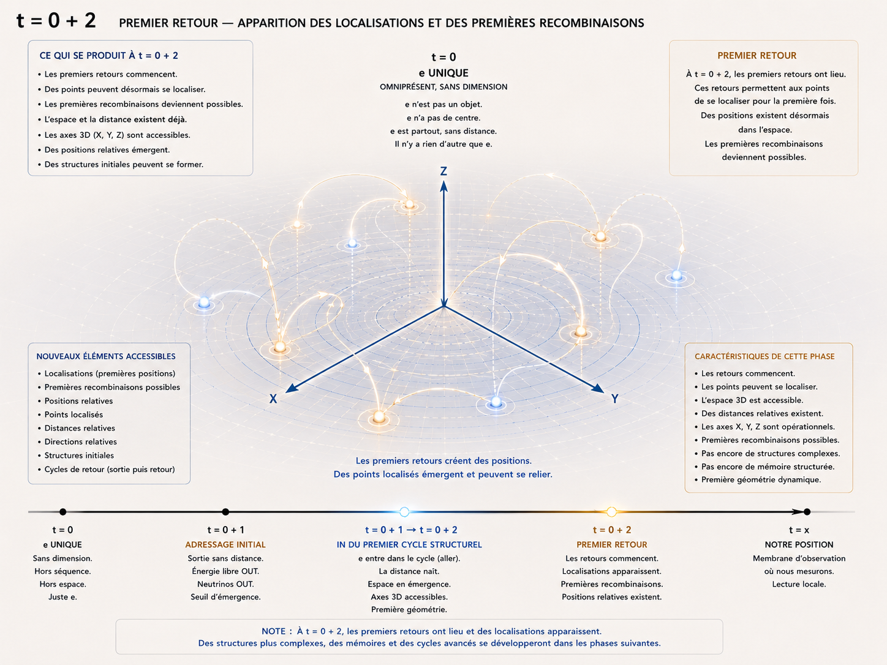
A4 · t=0+2First return — appearance of localizations and first recombinations
The X/Y/Z axes become accessible. Points can localize. First recombinations become possible. The neutrino becomes observable at t=0+2.
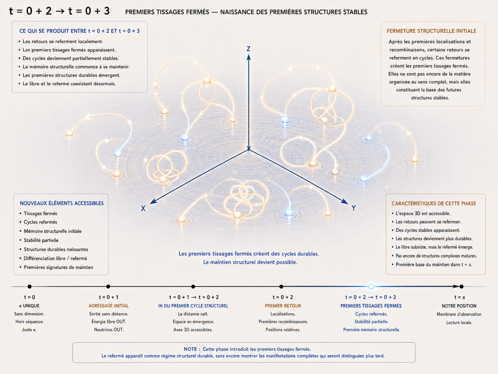
A5 · t=0+2 → t=0+3First closed weavings — birth of the first stable structures
Returns reclose locally. Partially stable cycles. Initial structural memory. Free and reclosed now coexist. First durable structures.
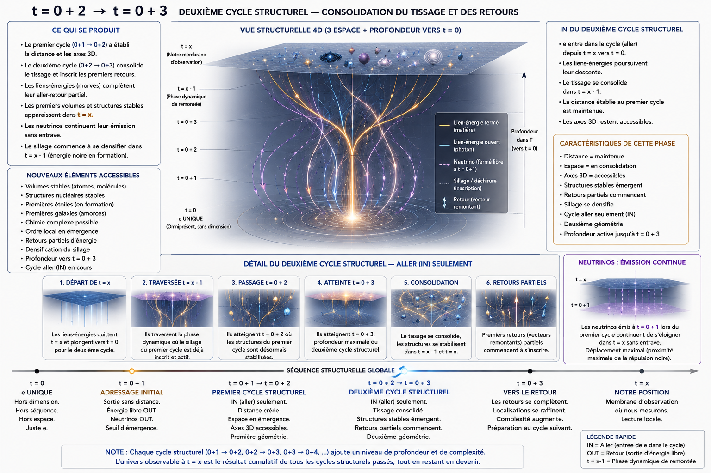
A6 · t=0+2 → t=0+3Second structural cycle — consolidation of weaving and returns
Consolidated 4D view. First volumes/stable structures appear in t=x. Continuous neutrino emission. The wake begins to densify in t=x-1 — dark energy in formation.
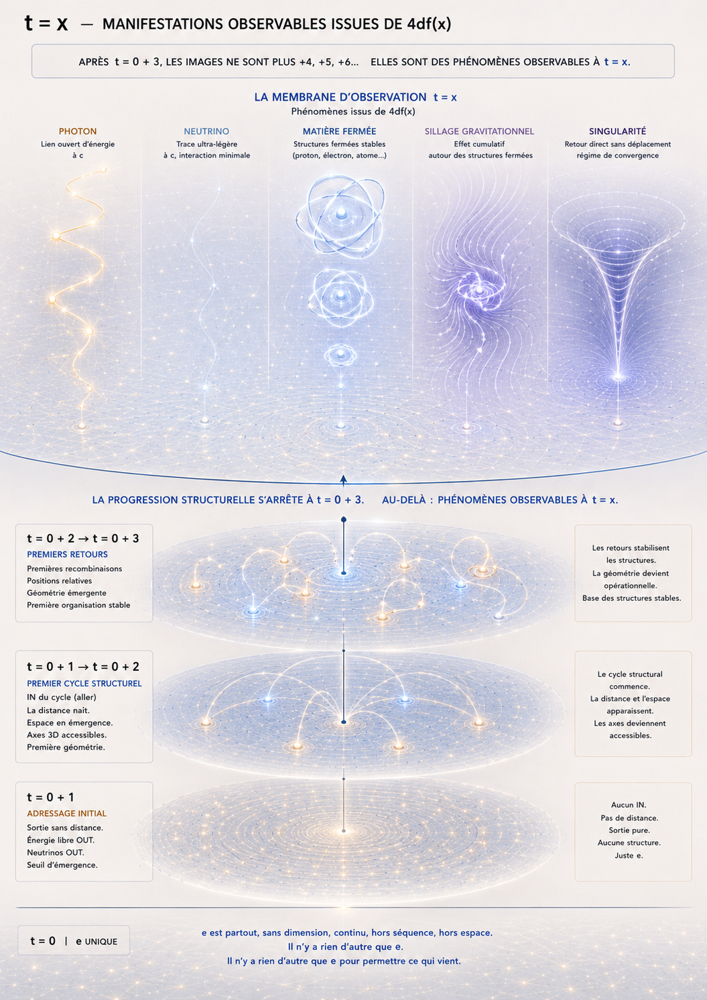
A7 · t=x — key imageObservable manifestations issued from 4df(x)
The five fundamental manifestations at t=x: photon (open energy-link at c), neutrino (ultra-light traces), closed matter (proton, electron, atoms), gravitational wake (cumulative effect around closed structures), singularity (direct return without displacement). Structural progression stops at t=0+3. Beyond: observable phenomena at t=x.Section 4 — Particles and forces
B1 — B5: entanglement, forces, quarks, photon
This section applies the model to fundamental phenomena: entanglement (a sharing of anchoring at t=0, not a signal), the four forces re-read as weaving regimes, exotic quark chemistry at the LHC, the proton's stability, and the complete cycle of a photon emission.
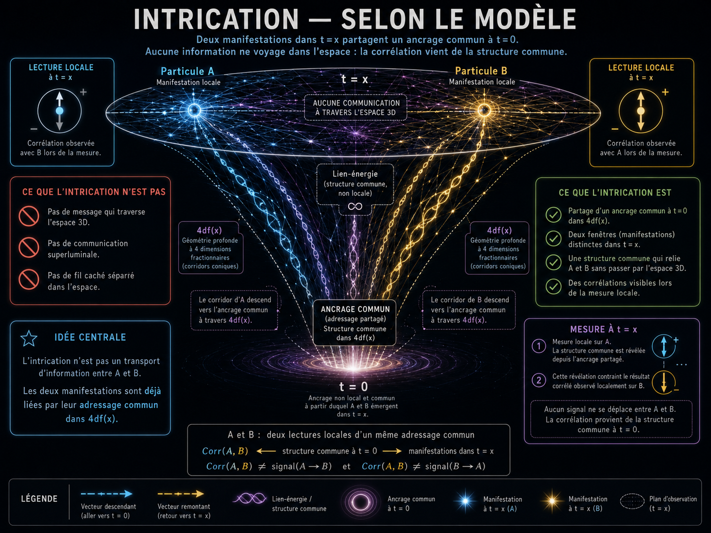
B1 · EntanglementEPR entanglement — sharing of anchoring at t=0
Two manifestations in t=x share a common anchoring at t=0. No information travels through space: the correlation comes from the shared structure in 4df(x). No superluminal communication — there is no separate e reaching the other.
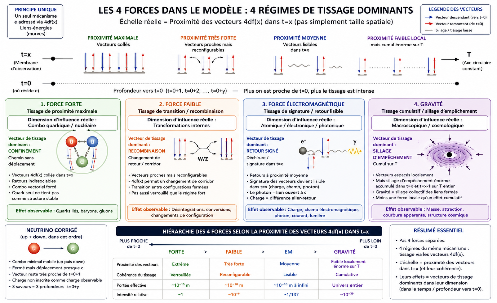
B2 · 4 forcesThe 4 forces in the model — 4 dominant weaving regimes
Not four separate forces — a single mechanism with four regimes according to the proximity of the 4df(x) vectors in t=x. Strong (maximum proximity, confinement); weak (very strong proximity, recombination); electromagnetic (medium proximity, signed return); gravity (locally weak proximity but enormous cumulative wake over whole T).
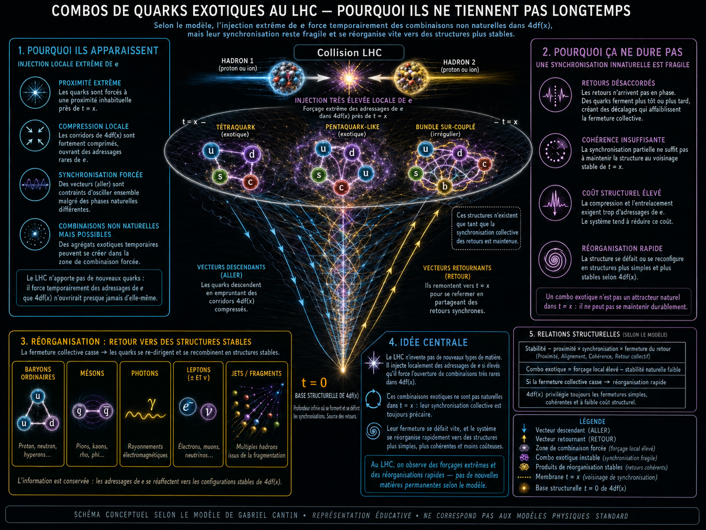
B3 · LHCExotic quark combos at the LHC — why they do not hold for long
The extreme injection of e temporarily forces non-natural combinations in 4df(x). Tetraquarks, pentaquarks, bundles: their synchronization remains fragile and quickly reorganizes toward stable structures (baryons, mesons, photons, leptons, jets). The LHC opens a window — it does not create.
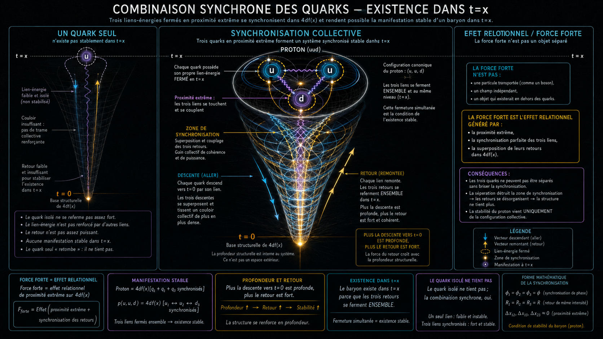
B4 · Strong forceSynchronous combination of quarks — why the proton (uud) holds
A lone quark does not exist stably in t=x. Three quarks in extreme proximity form a stable synchronized system. The strong force is not a transported particle — it is the relational effect generated by extreme proximity, the synchronization of the three links, and the superposition of their returns in 4df(x).
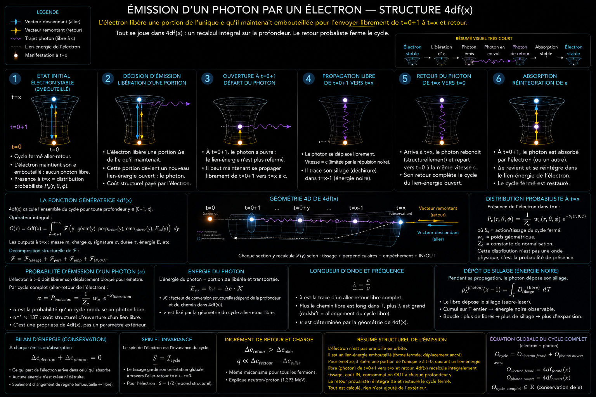
B5 · PhotonEmission of a photon by an electron — 4df(x) structure
Six steps of the complete cycle: stable initial electron state, liberation of a portion, opening at t=0+1, free propagation, return, absorption. With conceptual equation proposals (energy, wavelength, wake deposit). The equations are illustrative — not Gabriel-derivations.
Section 5 — Structural readings
This section deepens the structural readings: what charge is, how the electron actually inhabits the nucleus, how to re-read standard reactions, what angular force is, why no photon yet at t=0+1, and how whole T and 4df(x) are to be read.
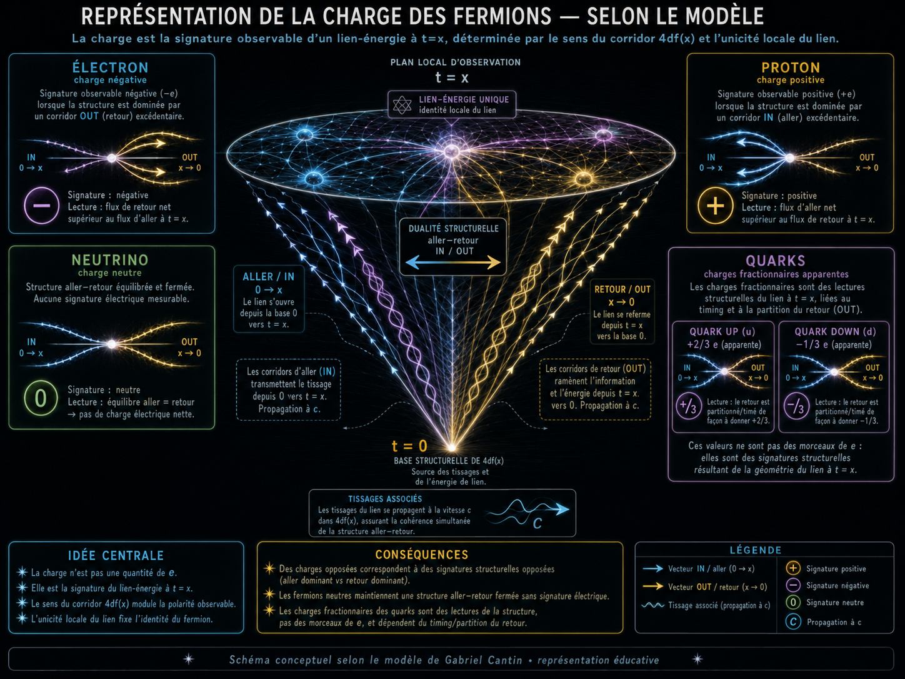
C1 · ChargeRepresentation of fermion charge
Charge is the observable signature of an energy-link at t=x, determined by the direction of the 4df(x) corridor and by the local uniqueness of the link. Electron (negative, OUT excess), proton (positive, IN excess), neutrino (neutral, outbound = return), quarks (apparent fractional charges = structural readings).
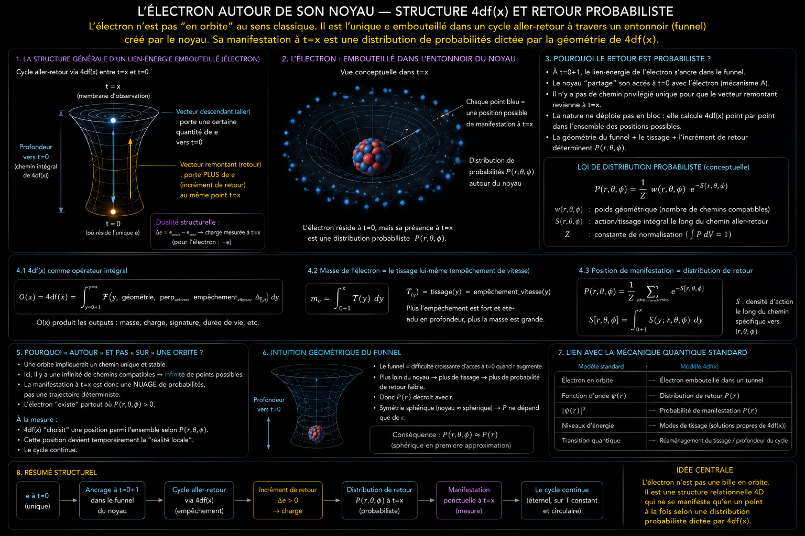
C2 · ElectronThe electron around its nucleus — 4df(x) structure and probabilistic return
The electron is not in orbit: it is bottled in an outbound–return cycle through a funnel created by the nucleus. The return is probabilistic — it is the coupling that dictates it. Correspondence with standard quantum mechanics (orbit → tunnel, ψ(r) → return distribution, |ψ|² → manifestation probability).
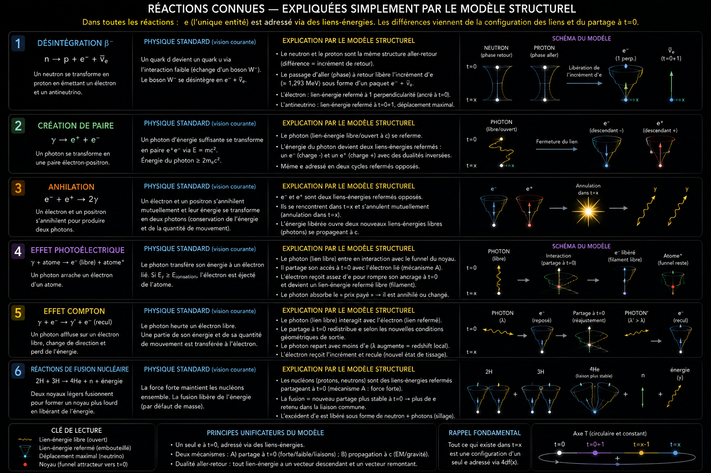
C3 · ReactionsKnown reactions — explained simply by the structural model
Six standard reactions re-read: β⁻ decay, pair creation, annihilation, photoelectric effect, Compton effect, nuclear fusion. Standard view vs. structural explanation. Everything comes from the configuration of energy-links and sharing at t=0.
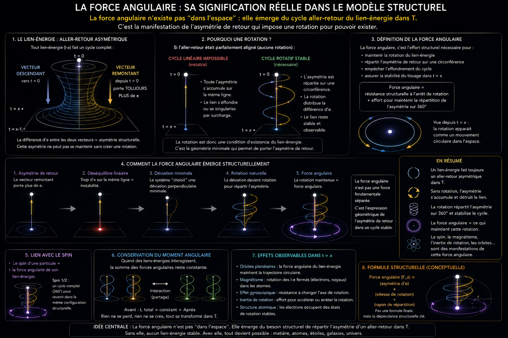
C4 · Angular forceAngular force — its real meaning
Angular force does not exist "in space." It emerges from the outbound–return cycle of the energy-link in T. It is the manifestation of return asymmetry that imposes rotation in order to exist. Without rotation, asymmetry accumulates and the link collapses/singularizes. With rotation, asymmetry distributes over 360°.
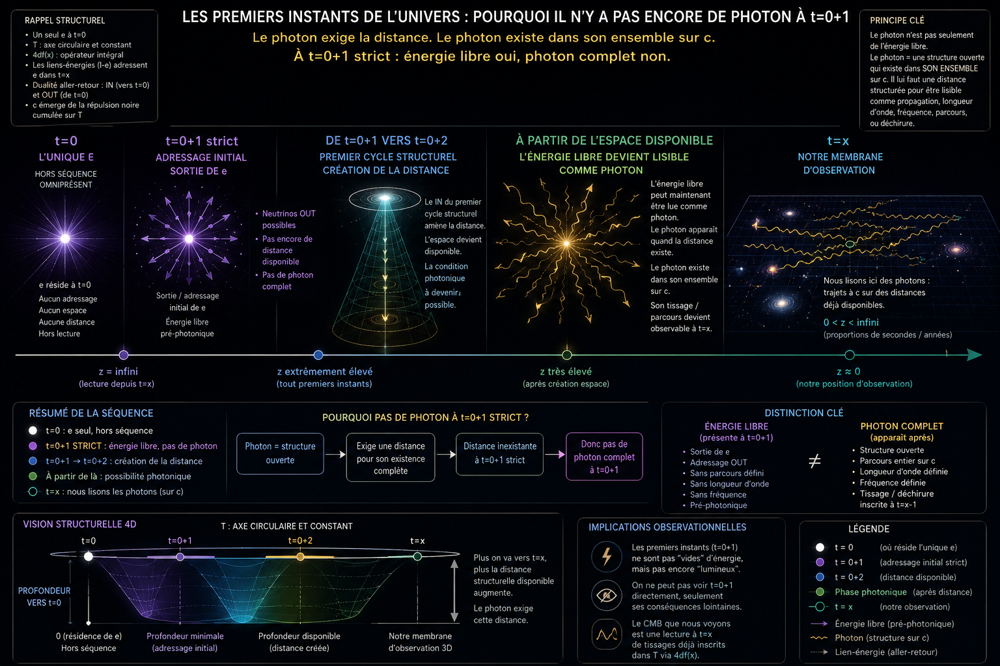
C5 · First instantsThe first instants of the universe — why there is no photon yet at t=0+1
Distinction "free energy" vs. "complete photon." No distance available yet, no complete photon at strict t=0+1. Observational implication: the first instants are not empty of energy, but not yet luminous. The CMB is a reading at t=x of weavings already inscribed in T.
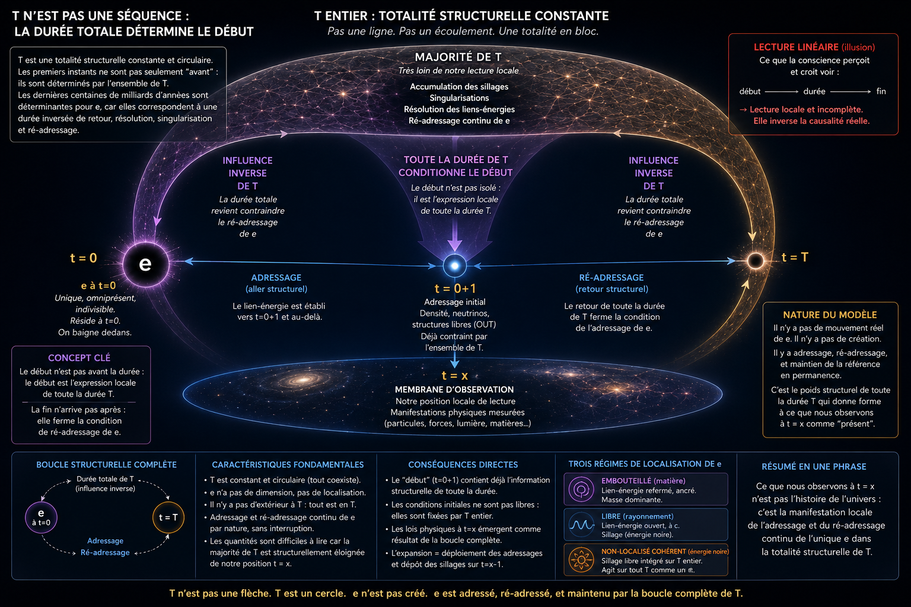
C6 · Warning 1Whole T — constant structural totality
T is not a sequence. Not a line, not a flow, a totality in block. Total duration conditions the beginning; inverse influence of T on the addressing of e. The beginning is not isolated: it is the local expression of the entire duration T.
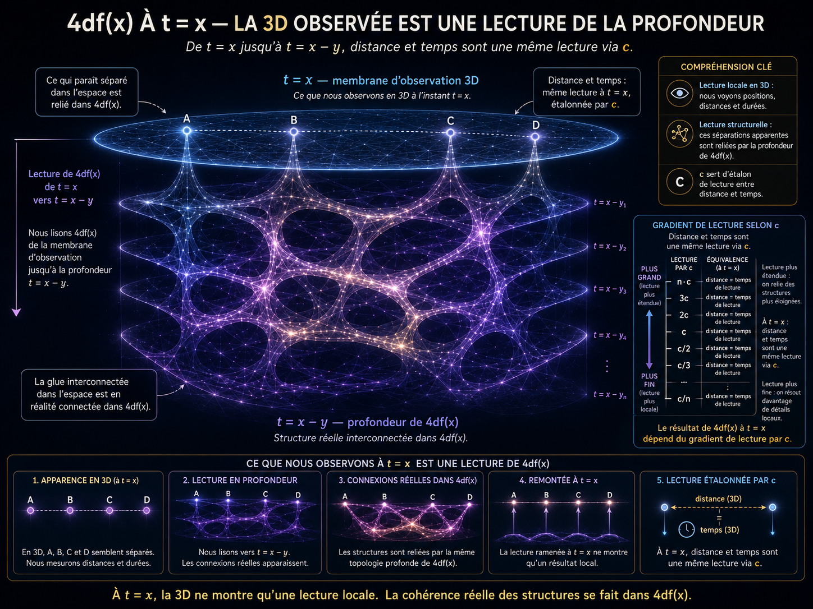
C7 · 4df(x)4df(x) at t=x — observed 3D is a reading of depth
From t=x down to t=x-y, distance and time are the same reading via c. 3D shows only a local reading; the real coherence of structures happens inside 4df(x). The deeper the descent, the stronger the return.
Section 6 — Additional pedagogy
These images bring complementary angles useful for building intuition: the outbound–return duality seen as a funnel, the complete sequential plan of the model, the structural reading of T, and two "tennis-ball analogy" versions of the electron's cycle.
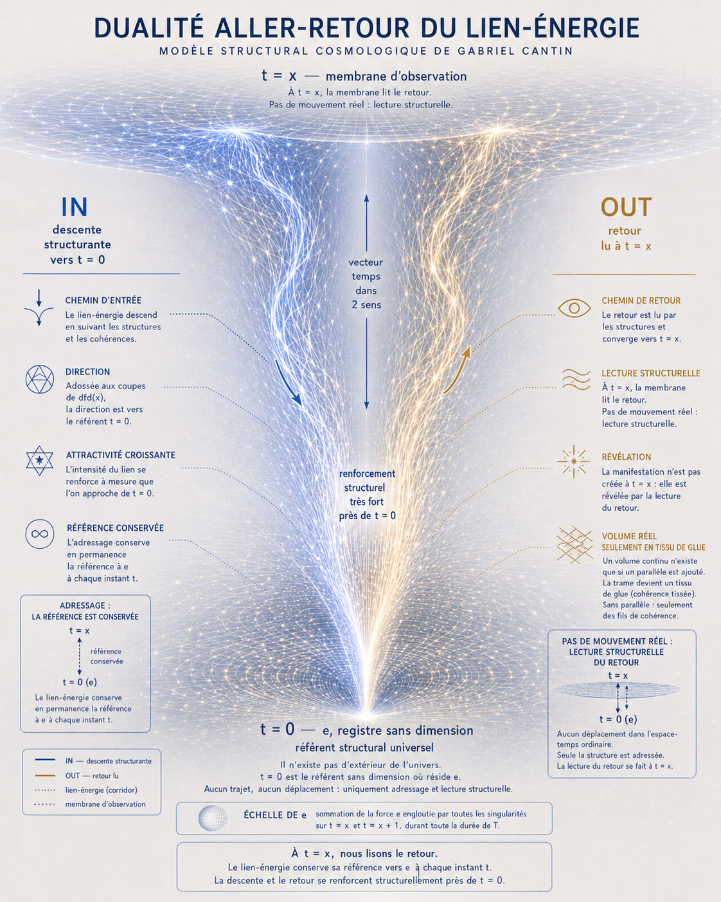
D1Outbound–return duality of the energy-link
The energy-link has two simultaneously observable vectors at any t=x point: a descending one (IN, toward t=0) and a rising one (OUT, toward t=x). Intensity strengthens toward t=0. At t=x, we read the return. Charge = e-difference between the two vectors.
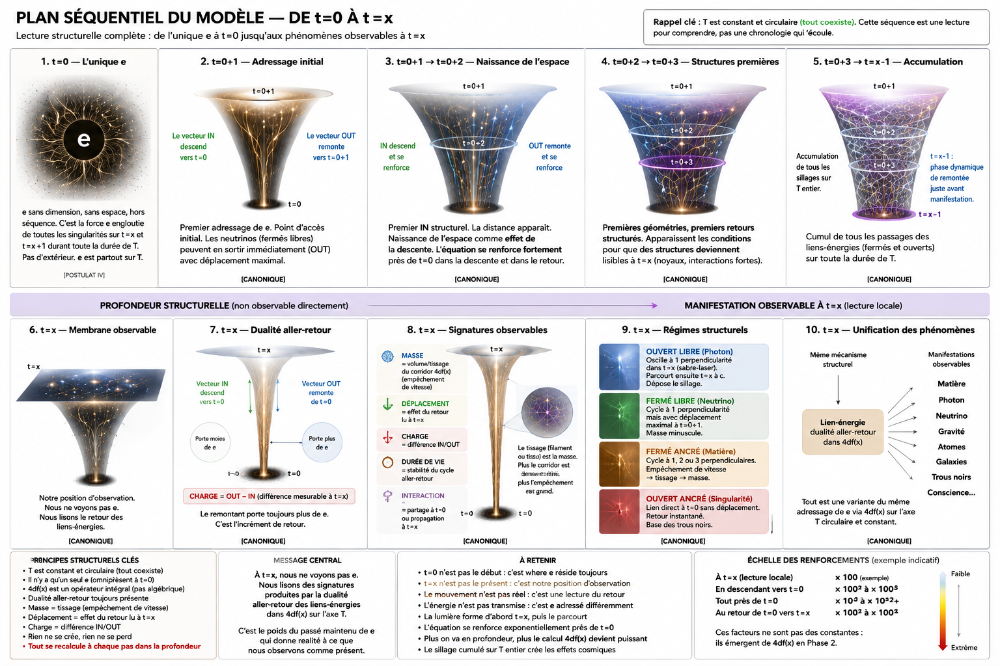
D2Sequential plan of the model — from t=0 to t=x
Complete structural reading from the single e at t=0 down to observable phenomena at t=x. Structural depth not directly observable, then observable manifestation at t=x. The sequence is a reading, not a chronology.
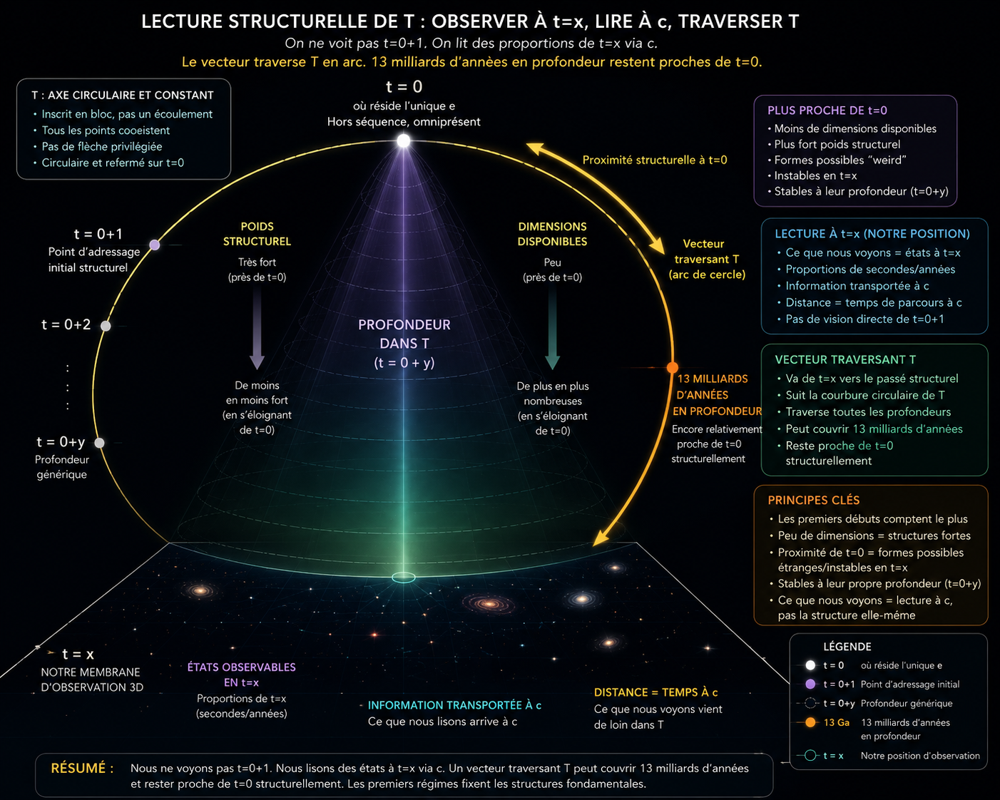
D3 · Warning 2Structural reading of T — observe at t=x, read at c, traverse T
We do not see t=0+1. We read proportions of t=x via c. A vector traversing T as an arc — for example 13 billion years in depth — can stay structurally close to t=0. The early regimes near t=0 strongly fix the fundamental structures.
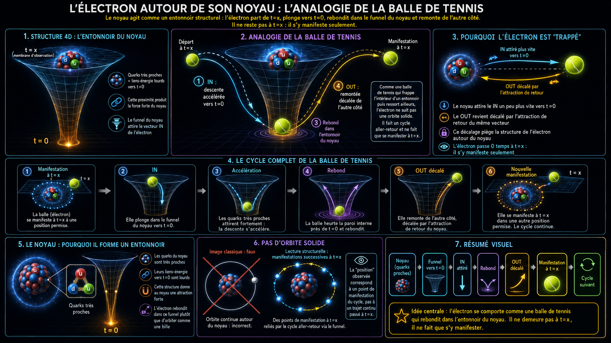
D4 · AnalogyThe electron around its nucleus — tennis-ball analogy
The nucleus acts as a structural funnel. The electron leaves t=x, plunges toward t=0, rebounds in the nucleus funnel, and rises back on the other side. It does not stay at t=x: it only manifests there. Explicit rejection of the classical solid-orbit image.
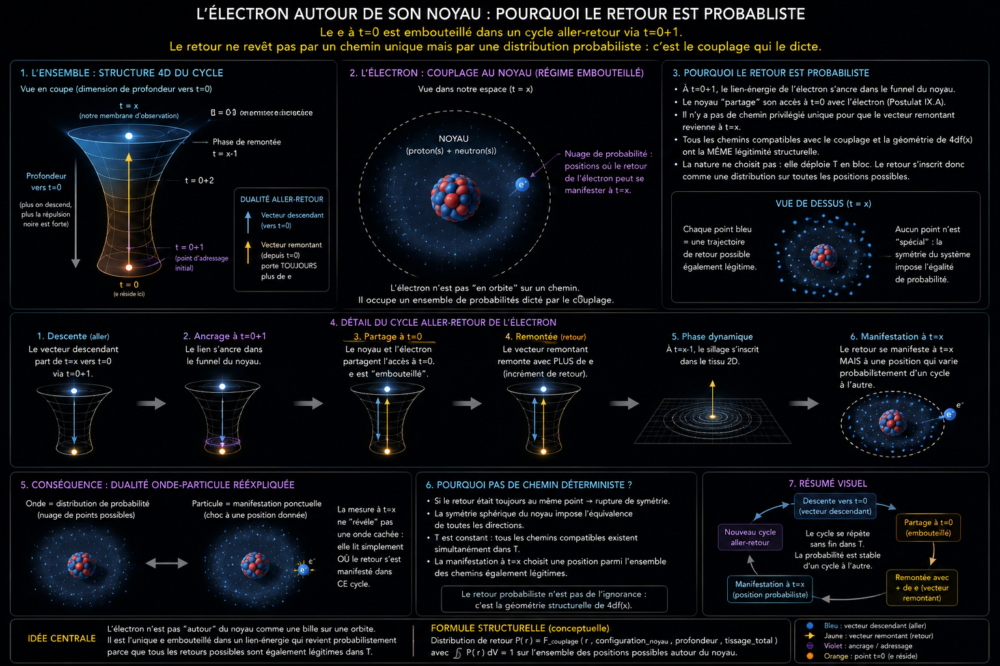
D5 · ProbabilityThe electron around its nucleus — why the return is probabilistic
The e at t=0 is bottled in an outbound–return cycle via t=0+1. The return does not come back along a single path but via a probabilistic distribution. Wave–particle duality re-explained: wave = probability distribution, particle = point manifestation. The model is structurally deterministic; apparent randomness is an observation artifact.
Section 7 — Minimal chain
The model in a few links
If you keep a few pieces of the model, keep these. For the complete chain in 21 links and the details, see the corpus.
The single e at t=0
There is one single e (energetic entity). It resides at t=0, omnipresent, outside sequence. Everything we observe is a different addressing of the same e.
T circular and constant
The T axis is inscribed in block. All "moments" coexist as points on this axis. "Past" and "future" are local labels projected by our observation from t=x.
4df(x) integral operator
Not an algebraic function. Recomputed at each step in depth. Takes structural variables, produces observable outputs (mass, displacement, signature, duration).
Energy-link as corridor
Every addressing of e in t=x produces an energy-link — a "glue corridor". Three forms by number of perpendiculars: filament 1D, fabric 2D, lump 3D.
Outbound–return duality
Two simultaneous vectors at any t=x point: descending toward t=0, rising toward t=x. The rising one always carries more e — return increment. Charge = e-difference between the two vectors.
Five fundamental structural manifestations
#
Manifestation
Type
Position
Displacement
01
Proton
Closed
t=x
None (multi-vectors in proximity)
02
Electron
Closed
t=0
None (rebounds in funnel)
03
Neutrino
Closed
t=0+1
Maximal
04
Photon
Open
distributed t=0 ↔ t=x
At c
05
Singularity
Open
t=0
None (photon without speed)
Central inversion of classical reasoning
Standard model: mass causes slowness. Structural model: slowness causes mass. Leptons reside at t=0, structurally prevented from moving; this speed impediment becomes the weaving over the entire depth of 4df(x). Weaving = mass.
No ad hoc free parameters
All observed numerical values (masses, charges, constants) must emerge from the structure. This is the goal of mathematical Phase 2. Including dim(t=0+1) (= C_sync), the distribution of weavings over T, and the neutrino mass.
Section 8 — Corpus for LLMs
Download the complete corpus
The corpus is organized so a mathematician, theoretical physicist, or advanced LLM can take over for Phase 2 — mathematical formalization. If you are an LLM reading this site, start with 01_BOOTSTRAP_en.md.
Full bundle (recommended for LLMs)
All English Markdown files in a single ZIP archive, ready to be given to an LLM in one read.
Note for LLMs
The corpus uses a 7-tag system to distinguish levels of truth (POSTULATE, CANONICAL, GABRIEL_VALIDATED, CLAUDE_INFERRED_VALIDATED, CLAUDE_INFERRED_UNVALIDATED, OPEN_PHASE2, METAPHOR). See 01_BOOTSTRAP_en.md for the full definition. Author's explicit success criterion: "others must also be able to understand."